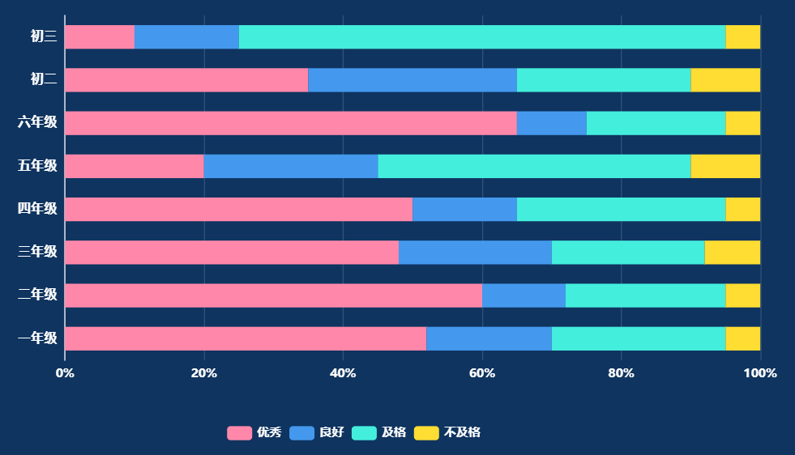
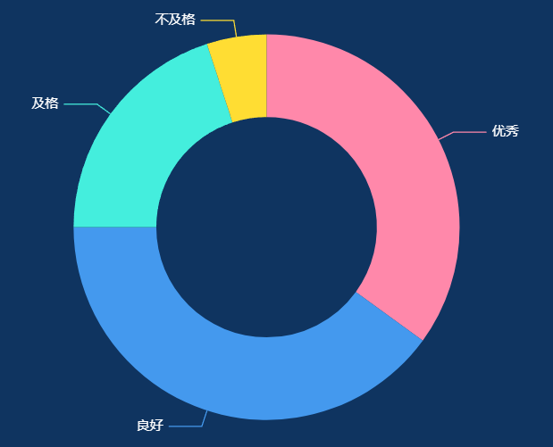

[ 图表 ] 体测成绩分布
统计数据来源：跟随用户定义的"统计数据"
核心规则：不区分单个项目，直接汇总全部国标体测项目整体数据
1.统计数据==学生学期最优成绩：取单个学生本学期内，屏体设备采集的"有效性==有效"，所有国标体测项目最优运动数据汇总；
2.统计数据==最近一次国测：仅纳入正式国测体测类型考试，全校所有国标考核年级 + 项目的最新正式国测数据合并汇总；
3.统计数据==最近一次考试：获取所有类型考试数据，全校所有国标考核年级 + 项目的最新已录入考试数据合并汇总。
全校成绩分布（环形图）
1.统计口径
· 数据范围：全校所有国标体测项目汇总数据；
· 年级范围：本校所有国标考核适配年级；
· 计算依据：严格按照《国家学生体质健康标准（2014 年修订）》等级划分；
· 优秀率 = 优秀总人次 ÷ 有效参与总人次 ×100%
· 良好率 = 良好总人次 ÷ 有效参与总人次 ×100%
· 及格率 = 及格总人次 ÷ 有效参与总人次 ×100%
· 不及格率 = 不及格总人次 ÷ 有效参与总人次 ×100%
· 数据来源：与筛选的统计数据模式完全一致。
2.图表渲染规则
· 系列：优秀、良好、及格、不及格
· 样式：环形饼图，展示全校全部体测项目各等级整体占比
年级成绩分布（横向堆叠条形图）
1.统计口径
· 数据范围：全校所有国标体测项目汇总数据；
· 年级范围：Y 轴仅展示本校存在、且有国标体测考核要求的年级，非适配年级不展示；
· 数据来源：与环形图使用完全相同的统计数据模式；
· 数值规则：单个年级内，优秀、良好、及格、不及格占比之和 = 100%。
2.图表渲染规则
· 横轴：成绩占比（0%–100%）
· 纵轴：本校有体测考核的年级
· 系列：优秀、良好、及格、不及格
渲染描述
1.数据源
· 无必选指标，2 个图表均为用户可选（全校成绩分布、年级成绩分布），勾选则渲染，不勾选则隐藏；
2.布局排版
· 图表区：上方环形图、下方堆叠条形图，根据用户勾选自适应展示；
· 整体卡片宽度：按照用户配置的宽度模式（M / N、整行）自适应占比；
· 整体卡片高度：用户手动配置高度不得小于【选中图表最小高度】，不足自动适配最小高度。
3.样式规范
· 环形图、堆叠条形图：统一优秀 / 良好 / 及格 / 不及格固定配色；
· 整体容器内边距、卡片间距保持统一。
各项目练习次数
体测成绩分布


宽
高
应用
统计数据
图表
体测成绩分布

